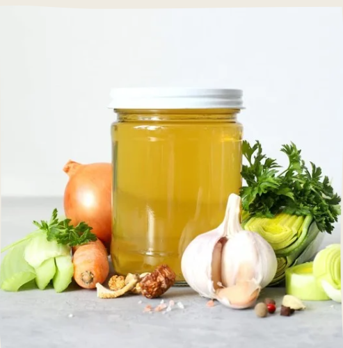
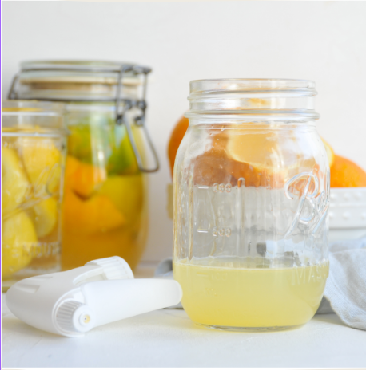
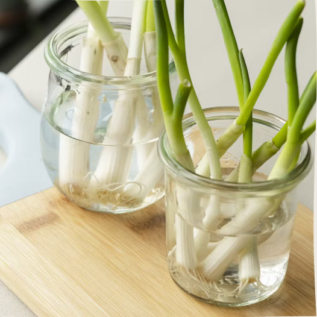
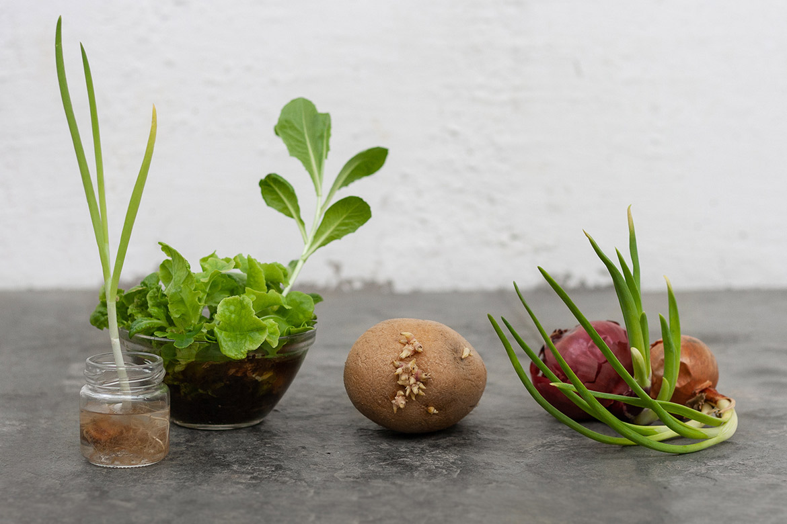

Resteverwertung: 🗑️ Wegwerfen? Nö! Lecker und nachhaltig!
Essen wegwerfen ist echt out! Es gibt so viele coole Möglichkeiten, um Lebensmittelreste sinnvoll zu nutzen und dabei noch lecker zu essen. Wir zeigen dir, wie du aus alten Schalen, Stielen und Co. neue Köstlichkeiten zauberst! Ready to get creative?
Gemüsebrühe aus Resten: 🍲 Aus alt mach neu!
Anstatt deine Gemüsereste in den Müll zu werfen, kannst du daraus 'ne richtig leckere Brühe kochen. Einfach die Reste in Wasser köcheln lassen, abseihen und fertig ist dein Basis-Rezept für Suppen, Soßen und Eintöpfe. So geht Zero Waste in der Küche!
Smoothies aus überreifem Obst: 🍌 Der Vitaminkick für faule Früchtchen!
Überreife Bananen, matschige Erdbeeren oder angedötschte Äpfel – ab in den Mixer damit! Smoothies sind die perfekte Möglichkeit, um Obstreste zu verwerten und dabei noch einen leckeren und gesunden Drink zu genießen. Einfach mixen und los geht's!

Hausgemachter Reiniger: 🍋 Zitronenfrische Sauberkeit ohne Chemie!
Du willst deine Wohnung sauber halten, aber keine Chemiekeule verwenden? Kein Problem! Aus Zitrusschalen kannst du ganz easy einen natürlichen Allzweckreiniger herstellen. Einfach die Schalen in Essig einlegen, ein paar Wochen ziehen lassen und fertig ist dein DIY-Reiniger. So sparst du Geld und schonst die Umwelt!
Unsterbliche Frühlingszwiebeln: 🧅Aus eins mach viele!
Frühlingszwiebeln sind die Helden der Resteverwertung! Anstatt die Wurzeln wegzuwerfen, stelle sie einfach in ein Glas Wasser. Nach ein paar Tagen sprießen schon wieder neue grüne Halme. Frühlingszwiebeln, die niemals sterben – wer will das nicht?
Nachwachsende Gemüse: 🥕 Ab ins Wasser und weiter geht's!
Viele Gemüsesorten kannst du ganz easy nachwachsen lassen. Stecke den Strunk von Salat, Sellerie oder Karotten in ein Glas Wasser und warte ab. Nach ein paar Tagen bilden sich neue Wurzeln und Blätter. So hast du immer frisches Gemüse auf der Fensterbank!
Resteverwertung ist einfach, lecker und macht Spaß! Lass deiner Kreativität freien Lauf und entdecke neue Möglichkeiten, um Lebensmittelverschwendung zu vermeiden. Die Umwelt wird es dir danken!